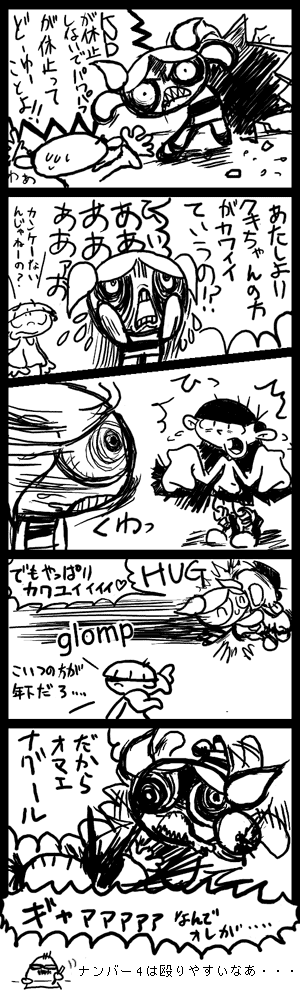
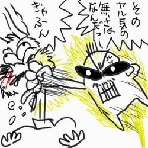
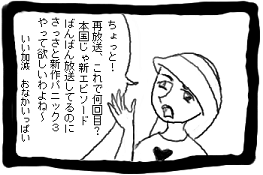
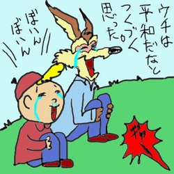
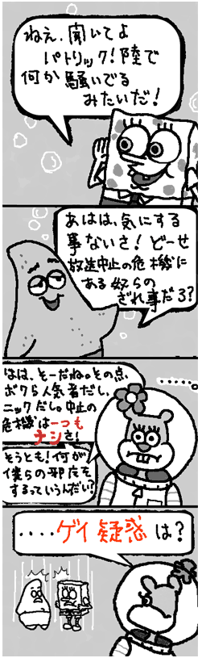

by LOU（カートゥーン横丁）

by スカポン太
PpGが休止するなんてないと思っていたとこでの、
完全逆恨みマンガでした。
だが、休止はPpGだけでなく、
開局以来一度も休止したことがないという伝説をもつ
デクスターラボもすでに先行して休止していたのだった！
by LOU（カートゥーン横丁）

by 黒イルカ（あめり感-AMMERIKAN）
ここで黒イルカさんが参戦したことで、一気に加速。
いきなりリレーマンガのようになっていった。
・・・というか、休止ネタは皆鬱積したものが多かったのか、
むしろ「休止ネタ便乗マンガ」という流れに
一方そのころ、場外乱闘も。



by わいりーコヨーテ（COYOTE-NET）

by 風灘大和（3C OVER REROAD)
toonemiルート分岐への予兆。
たまりにたまった、シャドウレイダース、リブートへの想いが
その後爆発するとは、だれが予想しえたであろうか！
by Zel （Sinister Creature）

by 風灘大和（3C OVER REROAD）

by 雛瀬あや（Brainbit）
このあたりで、「便乗」脱線が強くなってゆく・・・
ちょうどこのころ、インベーダージムが夏に日本上陸という
情報が出てきて大騒ぎ。そんなジム上陸記念マンガとも。
で、やっぱりその脇でも、もめてた・・・

キム・ポッシブルネタ、キター！
この分岐、それが後におそるべき展開になろうとは、
果たして誰が予想したであろうか？
このあたりから、後から読んだ人は混乱してくるかと思うが、
なんとか頭の中で統合してください。
数が多いから分岐させたけど、
分岐は分岐で実際には平行してリアルタイムで進んでいたのです。

by スカポン太

by boxman（箱男）


by わいりーコヨーテ（COYOTE-NET）

by mike（CandyRain）
HiHi Puffy AmiYumiが4月に先行放送
というか、もはやなんでもクラッシャーと化したバブルス・・・
一方、深い海の底では

by 麻紀子
スポンジボブにはゲイ疑惑があるらしーーんですよ！！
なんかアメリカでは有名な話らしいんですよ！！
初めて知った～！ビックリ～！

by NTB.XP（THE BLOG）

by NTB.XP（THE BLOG）
NTB.XPさんはNTB.XPさんで、一人で暴走はじめちゃったので、
ここらでも一応分岐させときます。 ロボバトル編へ分岐→
| 「終わったよ」 マックは振り返って手招きをした。すると向こうの方から青いオバケのような生き物が歩いてきた。ブルーだ。 「大丈夫、マック？疲れてない？」 「ん、ちょっと…あ、心配しなくてもいいよ、でも…もう、帰ろう」 「うん」 二人（？）はフォスターズ・ホームへと帰って行った。しかし、彼らはフォスターズ・ホームのすぐそばまで来た時、驚くべきものを見てしまった。 フォスターズ・ホームは占領されていたのだ。放送時間を奪われた者達によって…。 |
by しーちゃん（シロップの瓶という名の宝石）
|
ヨノナカハイツモ カワッテイルカラ ガンコモノダケガ カナシイオモイヲスル 「はぁ…」 シュプレヒコールノナミ トオリスギテユク カワラナイユメヲ ナガレニモトメテ 「なんか、とんでもない事になってたわ…」 ヨノナカハトテモ オクビョウナネコダカラ タワイノナイウソヲ イツモツイテイル 「あの『D』なんかどさくさに紛れて食器とか壊してたし…でも、『D』はどこに行ったのかしら…まあ、ひどい目にあってるって事は確かね」 彼女は少し笑った。「D」は戦いの最中にどさくさに紛れて誰かに連れて行かれたのだ。彼女は「D」を嫌っていた。 いったいなんで「D」がさらわれたのだろう…と彼女は思った。 シュプレヒコールノナミ トオリスギテユク カワラナイユメヲ ナガレニモトメテ 「さて、そろそろミスターヘリマンのお見舞いにでも行こうかな」 シュプレヒコールノナミ トオリスギテユク カワラナイユメヲ ナガレニモトメテ 「『D』を探すのは…まあ、いいや。どうせテレンスが探しに行ってるだろうし」 シュプレヒコールノナミ トオリスギテユク カワラナイユメヲ ナガレニモトメテ |
by しーちゃん（シロップの瓶という名の宝石）
まだまだ続くよ！